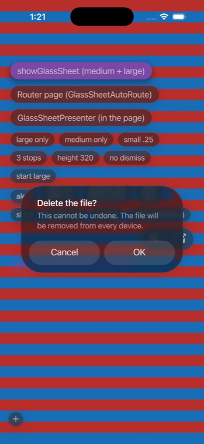

Каталог / Оверлеи: листы, диалоги, меню
showGlassAlert и диалоги
Алерт и confirmationDialog iOS 26 на жидком стекле; возвращают value нажатой кнопки.
Как выглядит



Что это
showGlassAlert<T>— карточка по центру: заголовок и сообщение слева, кнопки (две рядом, больше — столбиком). Опционально текстовые поляGlassAlertField.showGlassActionDialog<T>—confirmationDialog: узкая карточка со столбцом кнопок; сoriginвырастает рядом с кнопкой, иначе внизу экрана. Кнопка с рольюcancelне рисуется — закрытие тапом вне карточки возвращает её value.
Пример
final ok = await showGlassAlert<bool>(
context,
title: 'Удалить файл?',
message: 'Это нельзя отменить.',
actions: const [
GlassAlertAction(label: 'Удалить', role: GlassAlertRole.destructive, value: true),
GlassAlertAction(label: 'Отмена', role: GlassAlertRole.cancel, value: false),
],
);
final name = TextEditingController();
await showGlassAlert<void>(context, title: 'Имя', fields: [GlassAlertField(controller: name, placeholder: 'Name')],
actions: const [GlassAlertAction(label: 'OK', value: null)]);Параметры (из dartdoc)
GlassAlertAction
| Параметр | Тип | По умолчанию | Описание |
|---|---|---|---|
label | String | required | |
role | GlassAlertRole | GlassAlertRole.normal | |
value | T? | Returned by showGlassAlert. | |
onPressed | VoidCallback? | Called after the dialog started closing. |
GlassAlertField
| Параметр | Тип | По умолчанию | Описание |
|---|---|---|---|
controller | TextEditingController | required | |
placeholder | String? | ||
obscureText | bool | false | |
keyboardType | TextInputType? | ||
autofocus | bool | false |
GlassDialogRoute
| Параметр | Тип | По умолчанию | Описание |
|---|---|---|---|
settings | — | ||
title | String? | ||
message | String? | ||
actions | List<GlassAlertAction<T>> | required | |
fields | List<GlassAlertField> | const [] | |
actionDialog | bool | false | |
origin | GlassSheetOriginController? | ||
barrierDismissible | bool | false | |
liquid | bool? |
Импорт: import 'package:swiftuikit/swiftuikit.dart';